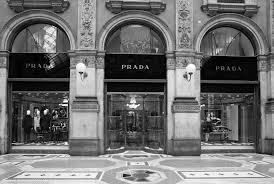
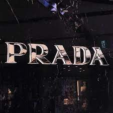

isadora e nicole

prada
 prada milano
prada milano
Em 1913,através das mãos de Mario Prada,foram fundada a famosa grife
italiana que carregava seu sobrenome.Mario,juntamente com seu irmão

processo de intenacionalização em 1986,inagugura-se as primeiras lojas
em Madri e NovaYork .logo depois vieram algumas espalhadas em Paris,Londres e tambem
em Tóquio.
>
